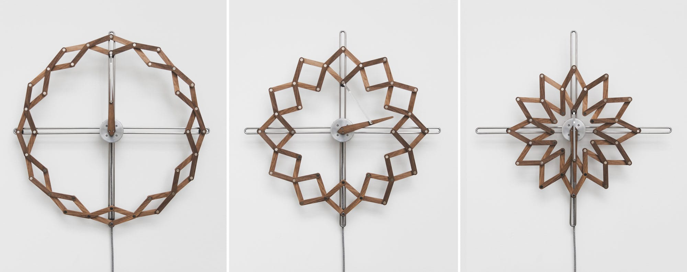
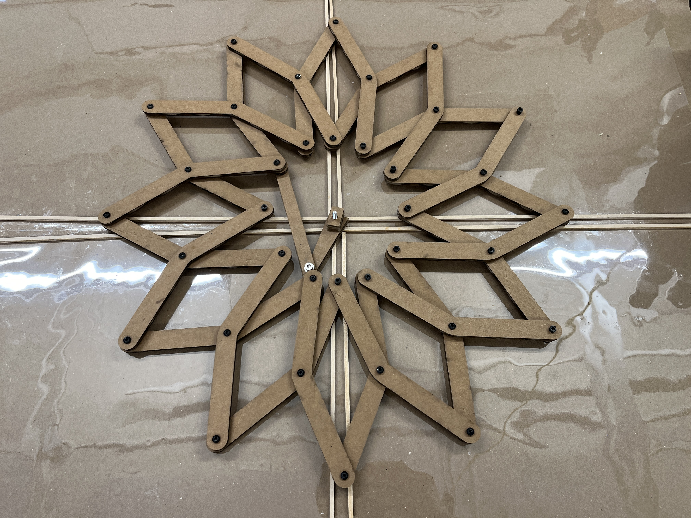
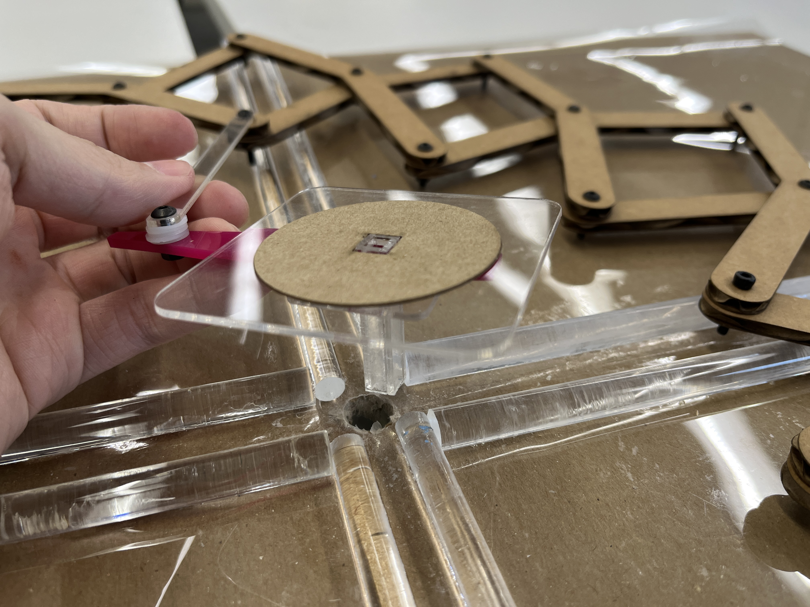
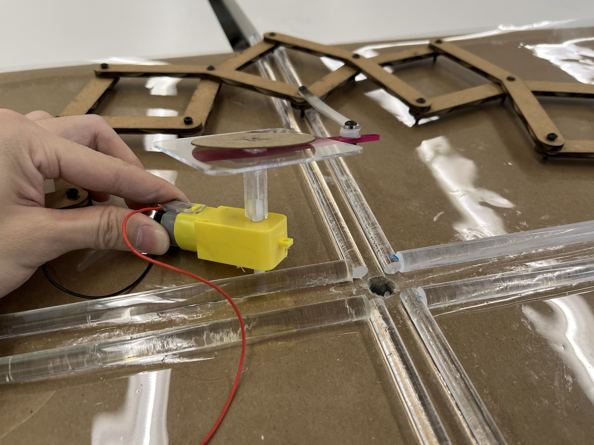

WK3: Hand tools and fabrication
Kinetic Sculpture
Structure
The entire structure functions as a clock capable of altering its appearance as the pointer retates.
This kinetic concept was from the below image.
The mechanism enabling this transformation involves a connector that links the structure to the pointer.
As the pointer rotates, powered by electricity, the connector propels the structural transformation.

Reference. Source: https://www.thisiscolossal.com/2018/11/solstice-kinetic-clock/
First, I built the model in rhino to see the simulate its motion and explore how those components are joined together.
Then I started with the surrounding structure. The structure itself is not very hard, but it was difficult to make it move.

Structure Assembling.

Structure Assembling.
Move
There were lots of attempts and experiments aimed at achieving motion.
I found myself repeatedly returning to alter the structure,
as the process of movement and transformation necessitated modifications to the original framework.
The initial iteration failed to move solely under the application of force on the pointer,
even though manual pushing from both directions proved effective.
Initially, I used cheap and ubiquitous cardboard for the base and wooden sticks for the rails,
but excessive friction hindered the already delicate structure's mobility.
Additionally, the core component, intended to serve as the primary driving force,
was too much fragile, simple, and crude.

First Iteration.

Analysis of failure.
Move Again
Thus, I spend a lot of time to design and modify the core component,
which served as the primary force generator for driving the entire system.
Additionally, I opted to change the materials of the base and the rails to reduce friction.
As a result of these adjustments, the system finally began to function.
However, there were still several points of dissatisfaction.
For instance, the structure did not unfold to the extent it should have.
Furthermore, the rotation speed proved to be too fast as I was unable to further decrease the voltage,
but the speed issue could easily be addressed later through microcontroller.
For a detailed explanation of the design, please refer to the image below.

The final product.

Assembling Process.

Detail.

Detail.

Detail.

Finally worked.
Transformable Deisgn
As the final project prototype would closely align with the concept of a transformable kinetic structure,
I initiated basic research in this field.
Here are some preliminary experiments conducted to explore transformable design concepts,
laying the groundwork for the start of the final project.

Basic Form

Basic Form

Basic Form

Transformation Simulation in Rhino

Transformation Simulation in Rhino